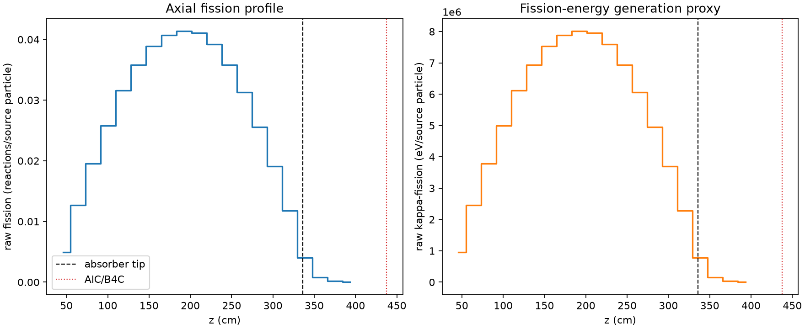
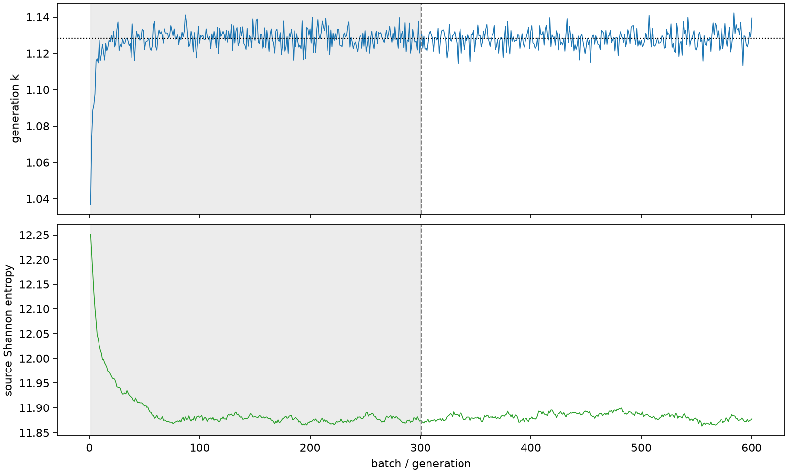

| field | value |
|---|---|
| experiment | V2-STAGE_256_OGRENCI_01-0009 |
| k | 1.1281308454046386 |
| MC standard error | 0.0001878414795717376 |
| seconds | 980.2277256679954 |
| acceptance | not_assessed |
| convergence | review_required |
Completed is output integrity only; physical and statistical review required. Zero tallies do not prove zero production or zero uncertainty.
| diagnostic | value |
|---|---|
| geometric fuel voxels | 5280 |
| zero fission tally voxels | 0 |
| low signal fuel voxels | 219 |
| low signal fission share | 7.459011063093147e-05 |
| low signal kappa share | 7.461808059430941e-05 |
| important fission share | 0.9500626529906793 |
| previous filter included | 5061 |
| duration estimate s | 1562.5173488400023 |
| actual minus estimate s | -582.2896231720069 |
| fission relative MC error | statistics |
|---|---|
| all_geometric_fuel | {"voxels": 5280, "positive_mean_voxels": 5280, "zero_mean_voxels": 0, "undefined_relative_error_voxels": 0, "median": 0.010240723064868614, "p95": 0.14485303367604652, "maximum": 0.4016790881445372} |
| low_signal | {"voxels": 219, "positive_mean_voxels": 219, "zero_mean_voxels": 0, "undefined_relative_error_voxels": 0, "median": 0.23299858855082275, "p95": 0.295343271151896, "maximum": 0.4016790881445372} |
| important_95pct | {"voxels": 3670, "positive_mean_voxels": 3670, "zero_mean_voxels": 0, "undefined_relative_error_voxels": 0, "median": 0.009009977654209987, "p95": 0.013887541706823483, "maximum": 0.016615048194159696} |
| outside_previous_filter | {"voxels": 219, "positive_mean_voxels": 219, "zero_mean_voxels": 0, "undefined_relative_error_voxels": 0, "median": 0.23299858855082275, "p95": 0.295343271151896, "maximum": 0.4016790881445372} |
| kappa_fission relative MC error | statistics |
|---|---|
| all_geometric_fuel | {"voxels": 5280, "positive_mean_voxels": 5280, "zero_mean_voxels": 0, "undefined_relative_error_voxels": 0, "median": 0.010228089101198656, "p95": 0.14457310886520597, "maximum": 0.40103762505141805} |
| low_signal | {"voxels": 219, "positive_mean_voxels": 219, "zero_mean_voxels": 0, "undefined_relative_error_voxels": 0, "median": 0.2325161050084282, "p95": 0.2950583036069253, "maximum": 0.40103762505141805} |
| important_95pct | {"voxels": 3670, "positive_mean_voxels": 3670, "zero_mean_voxels": 0, "undefined_relative_error_voxels": 0, "median": 0.008999203995310935, "p95": 0.013871218231894359, "maximum": 0.016593892288082886} |
| outside_previous_filter | {"voxels": 219, "positive_mean_voxels": 219, "zero_mean_voxels": 0, "undefined_relative_error_voxels": 0, "median": 0.2325161050084282, "p95": 0.2950583036069253, "maximum": 0.40103762505141805} |
| axial bin | fission share | kappa-fission share |
|---|---|---|
| 1 | 0.010766682821550954 | 0.010767172374614106 |
| 2 | 0.027493694317813497 | 0.027493591509309405 |
| 3 | 0.04248601102258219 | 0.04248599550489153 |
| 4 | 0.05611387061430395 | 0.05611384442075981 |
| 5 | 0.06859018186502507 | 0.06858985280922814 |
| 6 | 0.0778187346358377 | 0.07781833708784468 |
| 7 | 0.08452209119425874 | 0.08452179670104662 |
| 8 | 0.08844724175172686 | 0.08844704972151152 |
| 9 | 0.08986100837970994 | 0.08986072284034985 |
| 10 | 0.08922197150991885 | 0.08922151020388415 |
| 11 | 0.08513972217830389 | 0.08513950369080998 |
| 12 | 0.077864133016223 | 0.07786400299821214 |
| 13 | 0.06804040487728631 | 0.06804020162025301 |
| 14 | 0.05556690650294874 | 0.055567070893960374 |
| 15 | 0.041410078292589345 | 0.041409891685105046 |
| 16 | 0.02568426015285446 | 0.025684195616125543 |
| 17 | 0.008747141289306462 | 0.00874846563086729 |
| 18 | 0.0017287997854633012 | 0.001729511564291251 |
| 19 | 0.00040754746267735787 | 0.0004077277187525364 |
| 20 | 8.951832961947805e-05 | 8.955540818306053e-05 |
Histories include the inactive-to-active transition at batch 300. kappa-fission approximates fission energy production, not total heat deposition.

